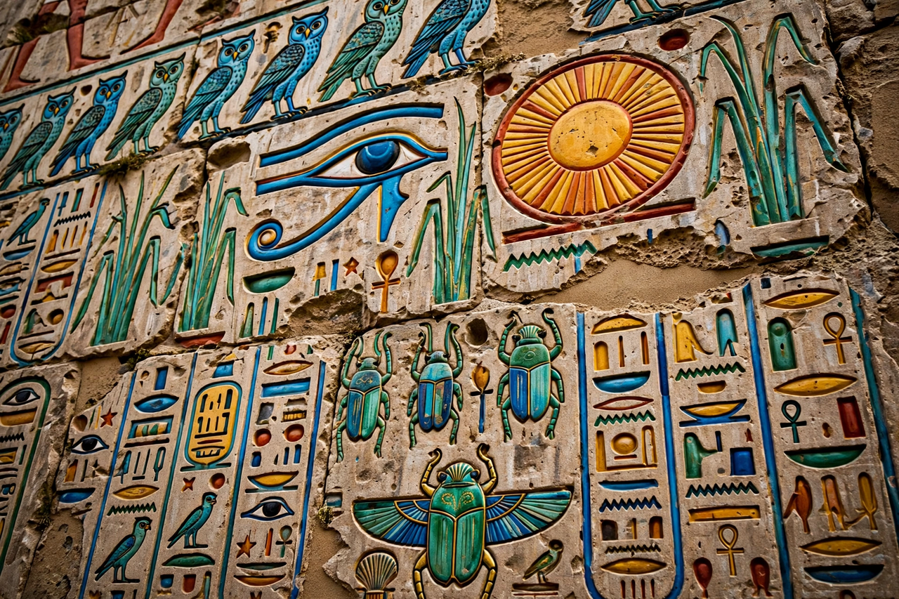

Egyptian hieroglyphs

Type: Logography with consonantal signs
Time period: c. 3200 BCE – 400 CE
Languages: Ancient Egyptian
Signs: about 700 in classical use (Gardiner's list), thousands in the Ptolemaic era
Deciphered: 1820s, principally by Jean-François Champollion
Egyptian hieroglyphs (from Greek hieroglyphikos, "sacred carvings") were the formal writing system of ancient Egypt, used for over three thousand years from about 3200 BCE until the last dated inscription in 394 CE at Philae. The script combines logographic signs (standing for whole words), phonetic signs (representing one, two or three consonants) and determinatives that clarify meaning. Everyday writing used the cursive derivatives hieratic and, later, demotic.
Decipherment
Knowledge of the script was lost in late antiquity, and for centuries scholars wrongly assumed the signs were purely symbolic. The discovery of the Rosetta Stone in 1799 — bearing the same decree in hieroglyphs, demotic and Greek — gave decipherers their key. Thomas Young identified several phonetic values, and Jean-François Champollion, recognising that the underlying language was Coptic and that signs could be phonetic, announced the decipherment in 1822, famously with his Lettre à M. Dacier.
How the script works
Hieroglyphs could be written left-to-right, right-to-left or top-to-bottom; signs face the start of the line. Vowels were generally not written. Alan Gardiner's sign list (1927) organised about 760 common signs into categories — men, gods, body parts, birds, plants — and remains the standard reference. See Writing system and Etymology.